Az univerzum rövid története
Itt részletesen elmagyarázhatod a lore-t: az emberiség birodalmát, a káoszt, a Space Marine-okat, frakciókat, kulcsfontosságú eseményeket és karaktereket.
Főbb események és karakterek
Leírhatod a legfontosabb eseményeket és karaktereket a Warhammer 40k univerzumban, mint például az Emperor, Horus Heresy, a Great Crusade és más jelentős történelmi pillanatok.
| Esemény/karakter | Leírás | Kép |
|---|---|---|
| Emperor of Mankind | Az emberiség legnagyobb vezetője és védelmezője, aki a birodalom alapítója és irányítója. |  |
| Horus Heresy | Egy hatalmas polgárháború, amelyben Horus, az egyik legnagyobb Space Marine kapitány fellázadt az Emperor ellen. | 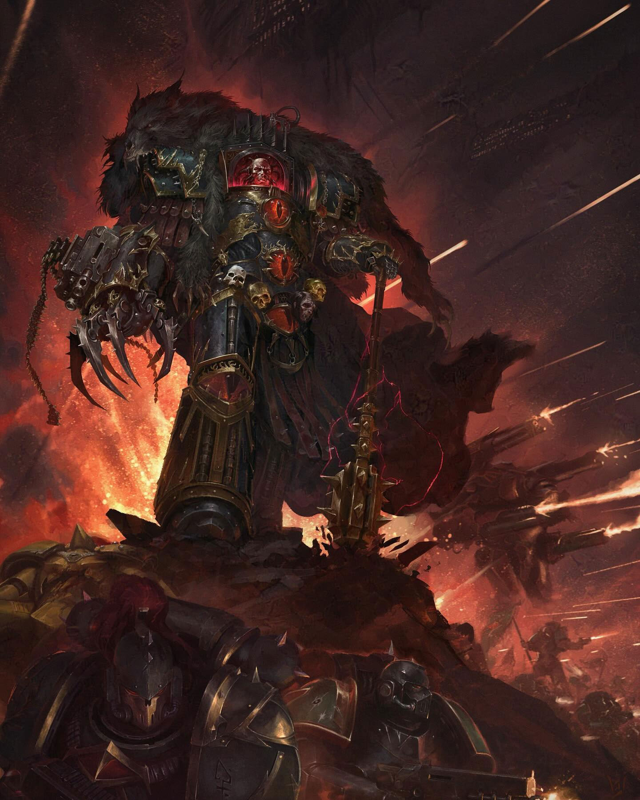 |
| Great Crusade | Az Emperor által vezetett hadjárat, amelynek célja az emberiség terjeszkedése és a galaxis meghódítása volt. |  |
| Fall of Cadia | Egy döntő pillanat, amikor a káosz megtámadta az emberiség egyik legfontosabb erődítményét, amely az Abaddon Black Legion vezetésével történt. | 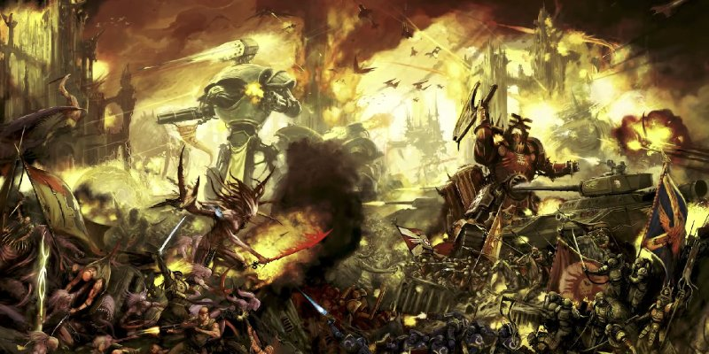 |
| Age of Darkness | Az a sötét időszak a Horus Heresy után, amikor az emberiség visszaesett a barbárságba és elveszítette a technológia nagy részét. | 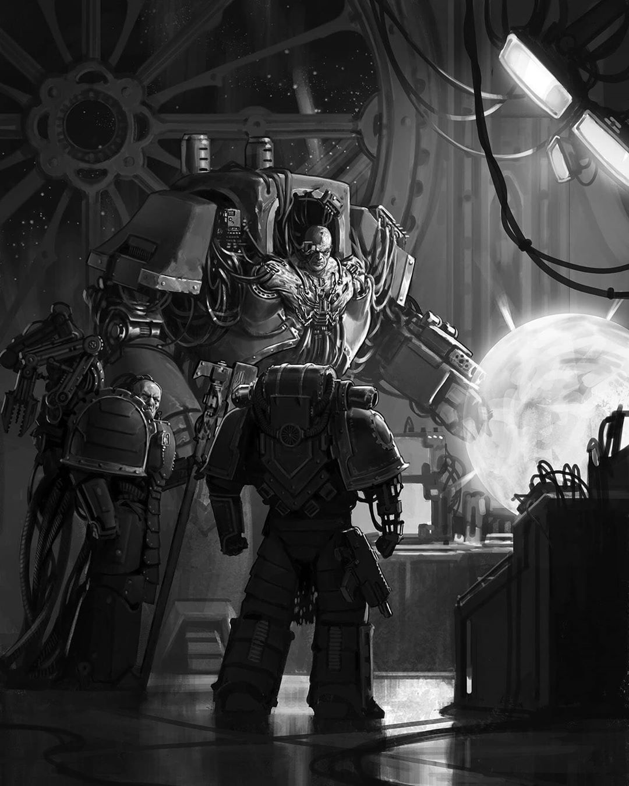 |
| Opening of the Eye | A pillanat, amikor a Warp kapuja kinyílt a Chaoson belül, lehetővé téve a káosz erőinek a galaxisba való behatolását. | 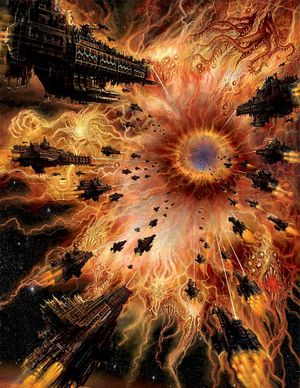 |
| Primarchs | Az Emperor által teremtett szuperkatonák, akik a Space Marine hadseregek vezetői voltak, mindegyikük egyedi képességekkel és személyiséggel rendelkezett. 18 primarchs van 18 chapter-re, eredetileg 20 volt de egyet töröltek a másikat pedig elfelejtették. | 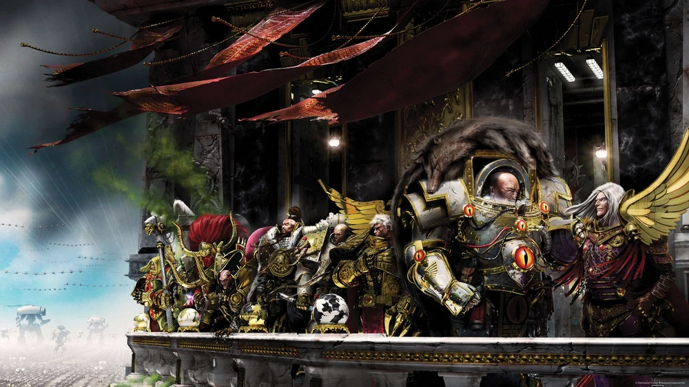 |
| Black Library | A titkos könyvtár, amely a káosz és a Warp mélyebb ismereteit tartalmazza, és amelyet csak a legbátrabbak mernek felfedezni. |  |
| Necron Awakening | A Necron faj újjáéledése, amely során ősi robotikus lények tértek vissza a galaxisba, hogy visszaszerezzék elvesztett birodalmukat. |  |
| Tyranid Invasions | A Tyranid faj inváziói, amelyek során ezek a ragadozó lények elárasztották a galaxis különböző részeit, hogy táplálékot és erőforrásokat szerezzenek. | 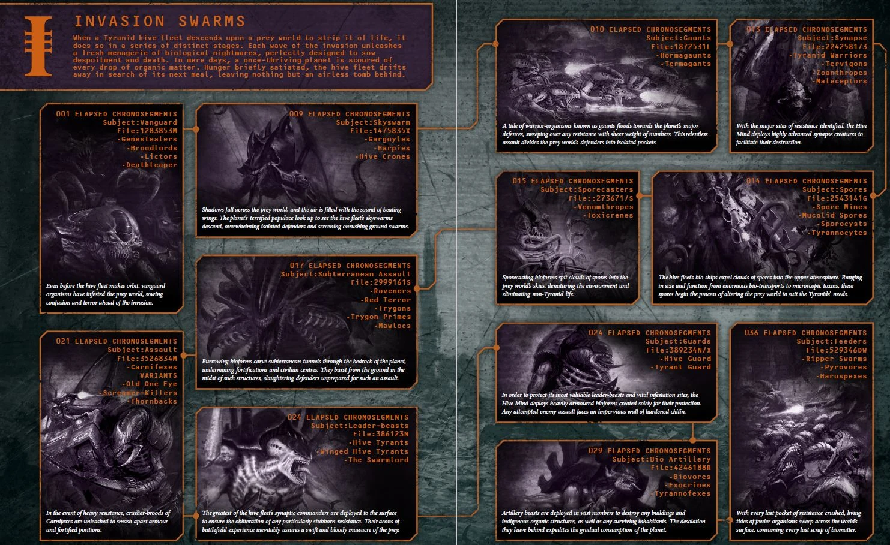 |
| Dark Mechanicum | A Mechanicum sötét oldalát képviselő szervezet, amely a káosz isteneinek szolgálatában áll, és tiltott technológiákat használ. | 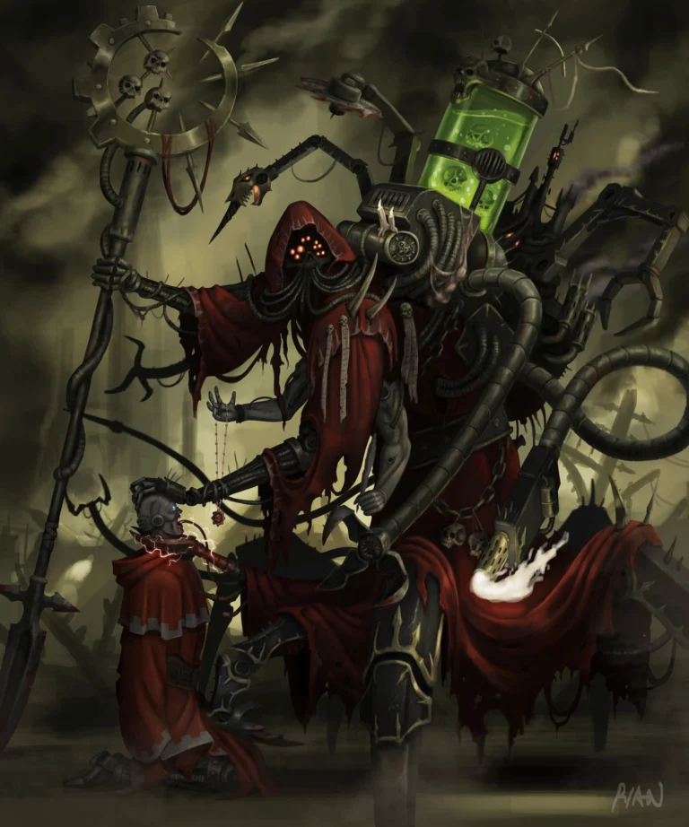 |
| Imperial Inquisition | A titkos szervezet, amely az emberiség védelmére és a káosz elleni harcra specializálódott, gyakran kegyetlen módszereket alkalmazva. | 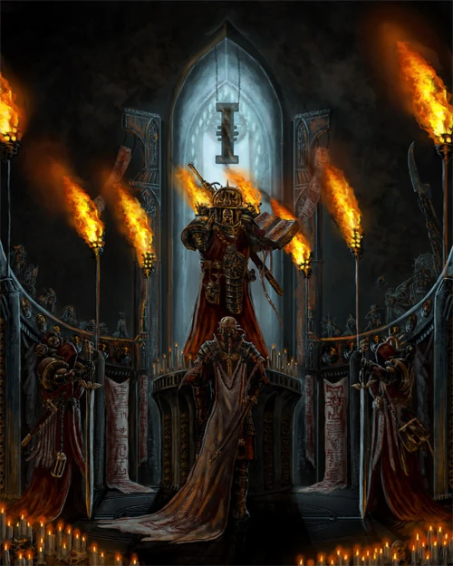 |
| Warp Storms (Immaterium) | A Warp viharok, amelyek zavarokat és veszélyeket okoznak az űrutazásban, gyakran megnehezítve a birodalom flottáinak mozgását. | 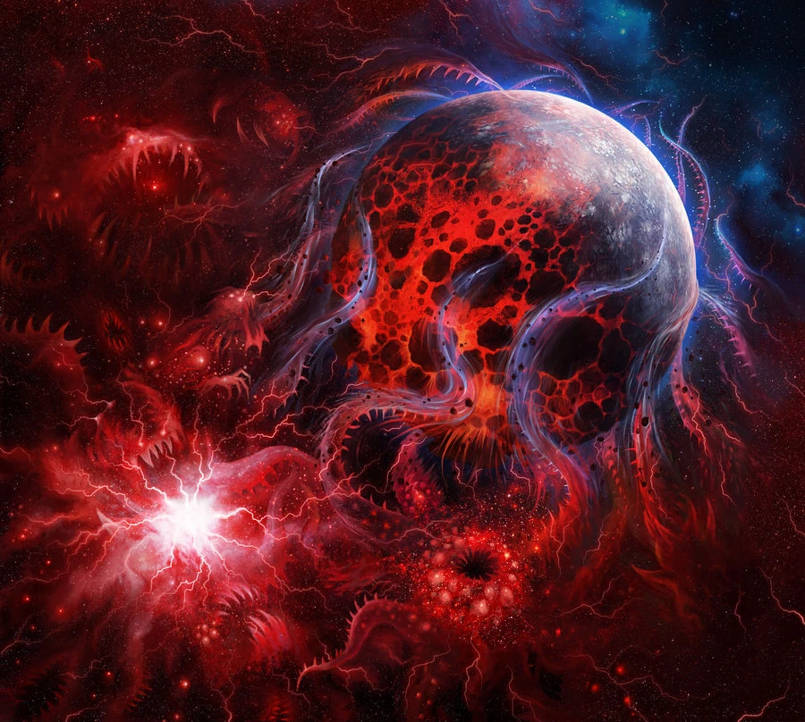 |
| Genestealer Cults | A Genestealer kultuszok, amelyek titokban behatolnak az emberi társadalmakba, hogy előkészítsék a Tyranid inváziót. |  |
| Cadia's Defense | Cadia védelme, amely az emberiség egyik legfontosabb erődítménye volt a káosz erői ellen, és kulcsszerepet játszott a galaxis biztonságában. | 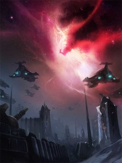 |
| Sisters of Battle | A harcos női szerzetesek rendje, akik az Emperor szolgálatában állnak, és szent harcokat vívnak a káosz és az eretnekség ellen. |  |
| Adeptus Mechanicus | Az emberiség technológiai őrzői, akik a gépek és a tudás kultuszát követik, és kulcsszerepet játszanak a birodalom technológiai fejlődésében. |  |
| Inquisitor Gregor Eisenhorn | Egy híres inkvizítor, aki számos kalandban vett részt a káosz elleni harcban, és akinek történeteit könyvek és játékok is feldolgozták. | 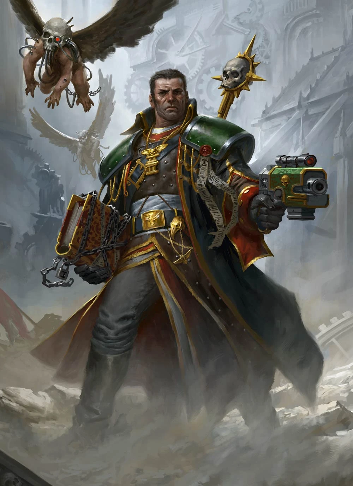 |
| Battle of Macragge | A Macragge csata, amely során a Tauk erők megvédték otthonukat a Tyranid inváziótól, és jelentős győzelmet arattak a birodalom számára. | 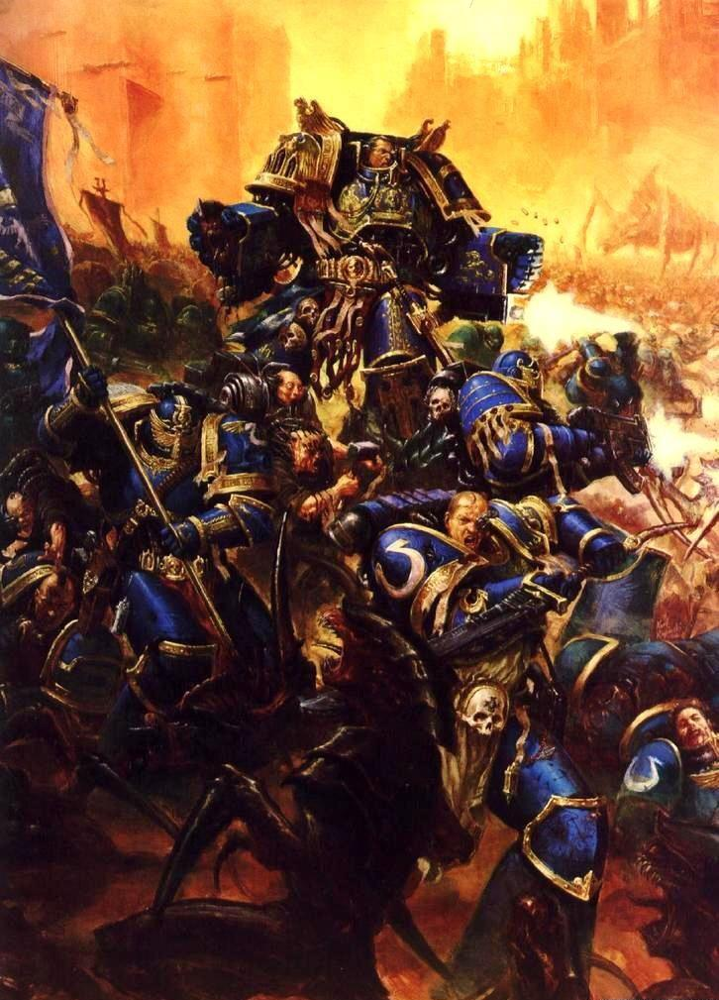 |
| The Horus Heresy Series | Egy népszerű könyvsorozat, amely részletesen bemutatja a Horus Heresy eseményeit és a karaktereket, akik részt vettek ebben a hatalmas konfliktusban. | |
| The Fall of Cadia Series | Egy könyvsorozat, amely a Cadia bukását és annak következményeit tárgyalja, bemutatva a birodalom küzdelmét a káosz erői ellen. | 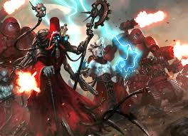 |
| The Eisenhorn Trilogy | Egy trilógia, amely Inquisitor Gregor Eisenhorn kalandjait követi nyomon, bemutatva a káosz elleni harcát és a birodalom szolgálatát. | 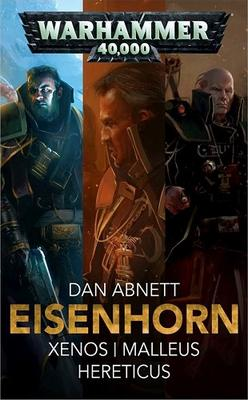 |